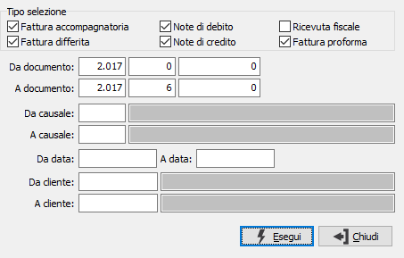

Stampa riepilogo fatture emesse
Il programma consente di produrre un report riportante le informazioni di fatturazione in forma sintetica evidenziando i ricavi, i dati dell'Iva e lo scadenzario, relativamente all'ambito dei parametri inseriti.

TIPO SELEZIONE: attraverso le caselle è possibile selezionare quali documenti includere nell'analisi. La spunta indica di considerare il tipo di documento, la casella vuota lo esclude dalla selezione.
DA DOCUMENTO: tre campi per contenere rispettivamente anno, serie sezionale e numero del documento da cui si vuole iniziare la selezione. Confermando a vuoto, la selezione inizia dal primo documento compatibile con i successivi parametri.
A DOCUMENTO: tre campi per contenere rispettivamente anno, serie sezionale e numero del documento con cui si vuole concludere la selezione. Confermando a vuoto, la selezione termina con l’ultimo documento compatibile con i successivi parametri.
DA CAUSALE: codice della causale documento da cui si vuole iniziare la selezione. Confermando a vuoto, la selezione inizia dalla prima causale valida. Sul campo sono attive le funzioni di ricerca (F9).
A CAUSALE: codice della causale documento con cui si vuole iniziare la selezione. Confermando a vuoto, la selezione termina all’ultima causale valida. Sul campo sono attive le funzioni di ricerca (F9).
DA DATA: data documento da cui si vuole iniziare la selezione. Confermando a vuoto, la selezione inizia dalla prima data valida.
A DATA: data documento con cui si vuole concludere la selezione. Confermando a vuoto, la selezione termina con l'ultima data valida.
DA CLIENTE: eventuale codice del cliente, presente in anagrafica, da cui si vuole iniziare la stampa. Confermando a vuoto, la stampa inizia dal primo cliente valido. Sul campo sono attive le funzioni di ricerca (F9).
A CLIENTE: eventuale codice del cliente, presente in anagrafica, con cui si vuole terminare la stampa. Confermando a vuoto, la stampa termina con l'ultimo cliente valido. Sul campo sono attive le funzioni di ricerca (F9).